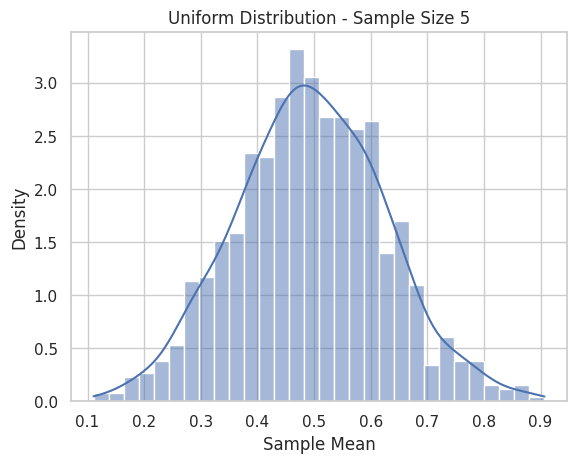
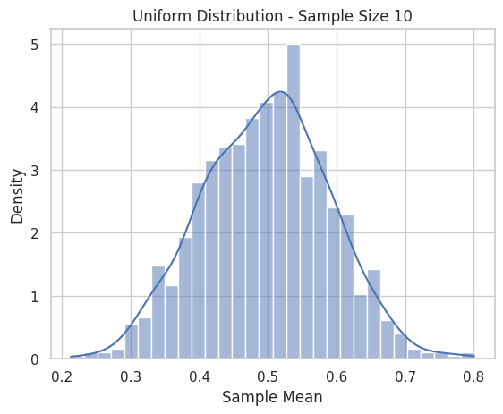
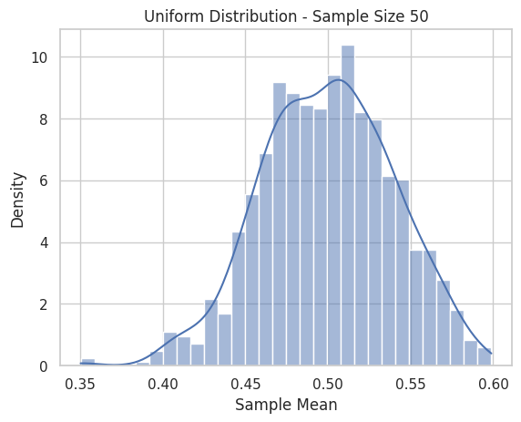

Problem 1
📘 Exploring the Central Limit Theorem through Simulations
🎯 Motivation
The Central Limit Theorem (CLT) asserts that the sampling distribution of the sample mean tends toward a normal distribution, even when the underlying population distribution is not normal, as long as the sample size is sufficiently large. This simulation-based project allows us to witness this powerful result across different population distributions.
📊 1. Simulating Sampling Distributions
We'll consider three population distributions:
- Uniform Distribution: \(U(a, b)\)
- Exponential Distribution: \(\text{Exp}(\lambda)\)
- Binomial Distribution: \(\text{Bin}(n, p)\)
import numpy as np
import matplotlib.pyplot as plt
import seaborn as sns
sns.set(style="whitegrid")
np.random.seed(42) # for reproducibility
# Generate population datasets
population_size = 100_000
uniform_pop = np.random.uniform(0, 1, population_size)
exponential_pop = np.random.exponential(scale=1.0, size=population_size)
binomial_pop = np.random.binomial(n=10, p=0.5, size=population_size)
📈 2. Sampling and Visualization
We sample from each population and compute the sample mean for varying sample sizes.
def generate_sample_means(population, sample_size, n_samples=1000):
return [np.mean(np.random.choice(population, sample_size)) for _ in range(n_samples)]
def plot_sampling_distribution(sample_means, title):
sns.histplot(sample_means, kde=True, stat="density", bins=30)
plt.title(title)
plt.xlabel('Sample Mean')
plt.ylabel('Density')
plt.show()
sample_sizes = [5, 10, 30, 50]
distributions = {
"Uniform": uniform_pop,
"Exponential": exponential_pop,
"Binomial": binomial_pop
}
for dist_name, population in distributions.items():
for size in sample_sizes:
means = generate_sample_means(population, sample_size=size)
plot_sampling_distribution(means, f"{dist_name} Distribution - Sample Size {size}")



🔍 3. Parameter Exploration
We can visualize how the spread (variance) of the sampling distribution as sample size increases and how the shape tends toward normality.
import pandas as pd
summary = []
for dist_name, population in distributions.items():
for size in sample_sizes:
means = generate_sample_means(population, sample_size=size)
summary.append({
"Distribution": dist_name,
"Sample Size": size,
"Mean of Sample Means": np.mean(means),
"Std of Sample Means": np.std(means)
})
df_summary = pd.DataFrame(summary)
print(df_summary)
Observations:
- The standard deviation of the sample mean decreases as sample size increases, confirming that larger samples give more stable estimates.
- Even skewed distributions (like exponential) show normality in the sampling mean as sample size increases.
🛠️ 4. Practical Applications of CLT
Estimation of Population Parameters
- CLT allows the use of sample means to estimate population means with known confidence intervals.
Quality Control
- Manufacturers monitor sample means from production lines to detect anomalies or drifts.
Finance
- Portfolio returns over time are often modeled using the normal distribution due to the CLT.
📌 Conclusion
Through simulations, we observed:
- The robustness of the CLT across distributions.
- How sample size affects the convergence to normality.
- How the spread of the sampling distribution shrinks with larger samples.
This highlights the CLT’s central role in statistical inference, allowing probabilistic statements even when the original data are non-normal.
📎 Resources
- NumPy Documentation: https://numpy.org/doc/
- Seaborn Visualization: https://seaborn.pydata.org/
- CLT Explanation (Khan Academy): https://www.khanacademy.org/math/statistics-probability/sampling-distributions-library